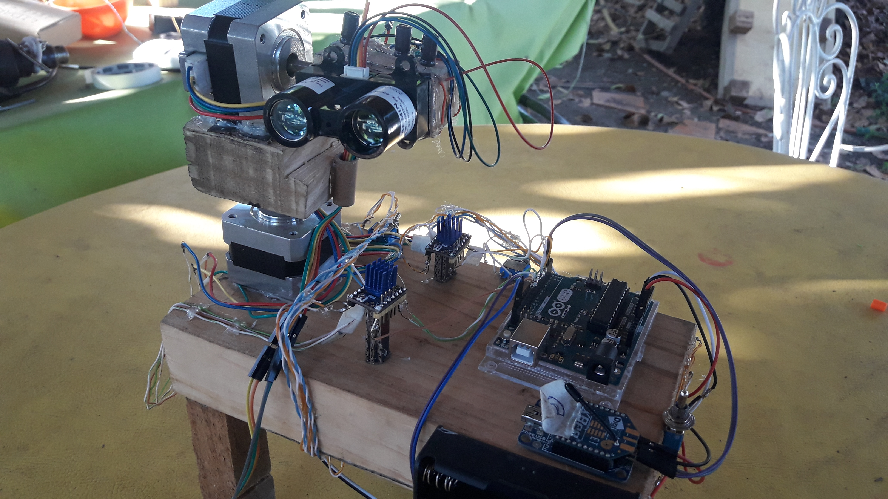

Pagina web mantenida por Felipe Mercado López
f.mercado.lopez96@gmail.com
.
Siempre buscamos Innovar
Crear valor mediante el desarrollo de soluciones tecnologicas, es nuestra forma de diferenciarnos y aportar al dersarrollo general de la empresa. En la imagen se muestra un escaner Lidar el cual permite obtener modelos 3D de un terreno, dicho escaner utiliza un sensor de distancia el cual se apunta en diferentes direcciones para obtener el modelo 3D con gran presición. Este escaner se termino de construir en Enero de 2022.
.
.
.
Mayor seguridad para los Trabajadores
El principal problema de seguridad son los riesgos de derrumbe, adentro de una faena minera. Contar con un modelo 3d de los tuneles subterraneos puede ayudar a: organizar el trabajo a realizar, reconocer posibles riesgos, medir el factor de potencia o el avance de los explosivos. De esta forma se promueve la inclusión de tecnologias actuales en la mineria chilena, también se fomenta la mano de obra local